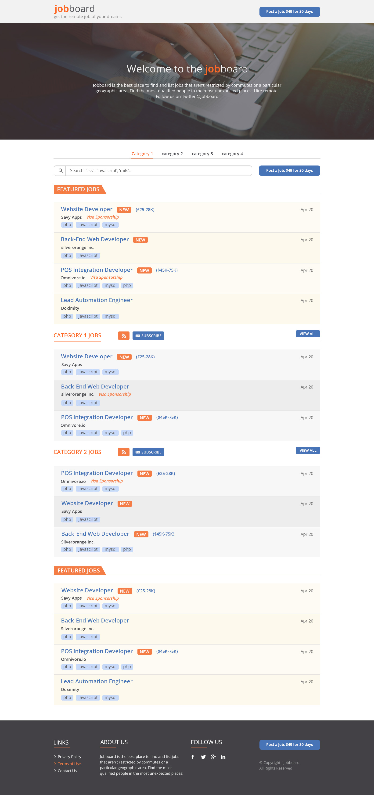
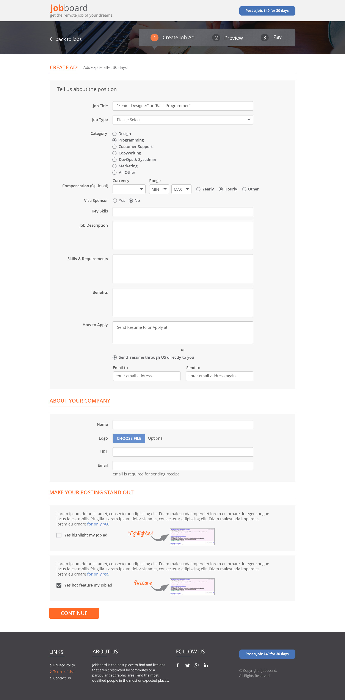
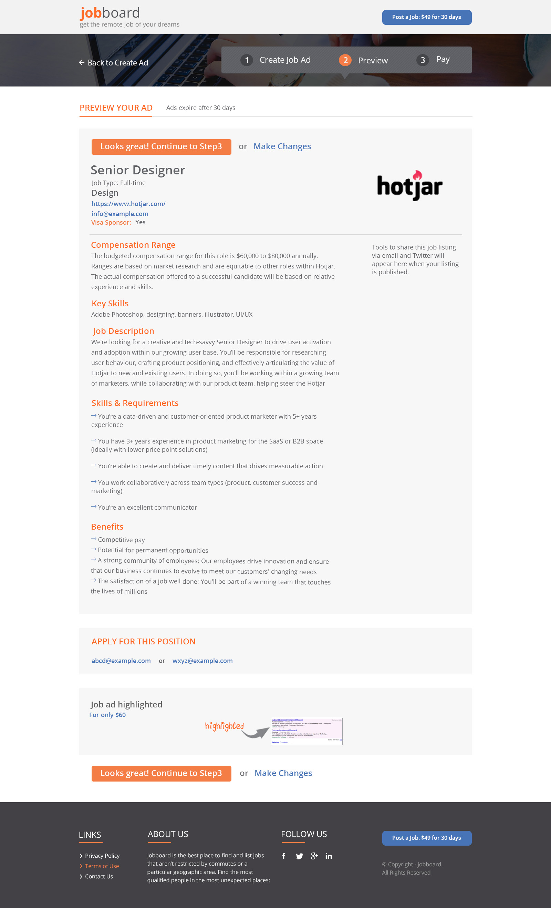
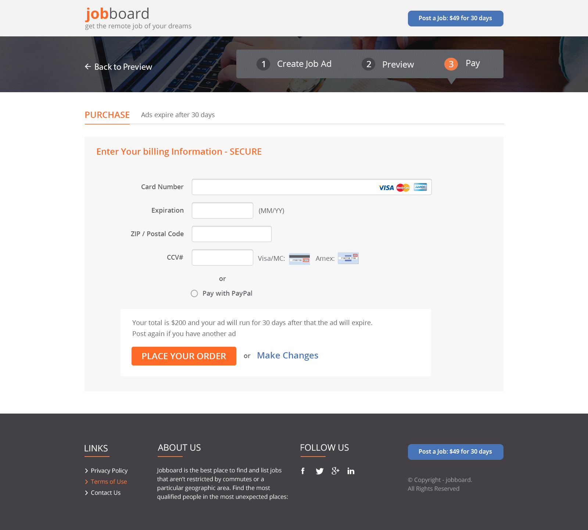

<div id="ajax-page" class="ajax-page-content">
  <div class="ajax-page-wrapper">
    <div class="ajax-page-nav">
      <div class="nav-item ajax-page-prev-next">
        <a class="ajax-page-load" href="portfolio-project-2.html"><i class="lnr lnr-chevron-left"></i></a>
        <a class="ajax-page-load" href="portfolio-project-4.html"><i class="lnr lnr-chevron-right"></i></a>
      </div>
      <div class="nav-item ajax-page-close-button">
        <a id="ajax-page-close-button" href="#"><i class="lnr lnr-cross"></i></a>
      </div>
    </div>

    <div class="ajax-page-title">
      <h1>ORJ Remote Job Board</h1>
    </div>

    <div class="row">
      <div class="col-sm-8 col-md-8 portfolio-block">
        <div class="owl-carousel portfolio-page-carousel">
          <div class="item">
            
          </div>
          <div class="item">
            
          </div>
          <div class="item">
            
          </div>
          <div class="item">
            
          </div>
        </div>

        <!-- ORJ Project Details Section Start -->
        <div class="full-detail-section mt-5">
          <div class="block-title mb-4">
            <h2 class="text-center">ORJ — Remote Job Board Platform</h2>
          </div>

          <h4>Project Summary:</h4>
          <p>
            Built an end-to-end remote job board that enabled employers to create and publish job postings and allowed candidates to browse and apply.
            Implemented paid posting, transactional notifications, and RSS subscriptions, deployed on AWS for reliable delivery and straightforward operations.
            <strong>Tech:</strong> Angular, Node.js, AWS (Elastic Beanstalk, SES), Braintree, Bootstrap.
          </p>

          <h4>My Role:</h4>
          <ul class="list-group list-group-flush mb-4">
            <li class="list-group-item">
              <strong>Product + UX:</strong> Defined core workflows for employer posting, candidate discovery, and application submission to reduce friction on both sides of the marketplace.
            </li>
            <li class="list-group-item">
              <strong>Full-Stack Development:</strong> Built the job posting lifecycle (create → preview → publish) and application flows end-to-end across the UI and backend services.
            </li>
            <li class="list-group-item">
              <strong>Payments:</strong> Integrated Braintree to support paid job postings and a monetization path for employers.
            </li>
            <li class="list-group-item">
              <strong>Notifications:</strong> Implemented transactional email delivery via AWS SES for application routing and employer updates.
            </li>
            <li class="list-group-item">
              <strong>Distribution:</strong> Added RSS feeds for job subscriptions so candidates could track new postings without logging in.
            </li>
            <li class="list-group-item">
              <strong>Deployment & Operations:</strong> Deployed to AWS Elastic Beanstalk and maintained an environment setup designed for repeatable releases and stable performance.
            </li>
          </ul>

          <h4>Architecture:</h4>
          <ul class="list-group list-group-flush mb-4">
            <li class="list-group-item">
              <strong>Frontend:</strong> Angular + Bootstrap for responsive UI across browsing, job creation, preview, and payment flows.
            </li>
            <li class="list-group-item">
              <strong>Backend:</strong> Node.js services handling job listing CRUD, application submission, email notifications, and payment coordination.
            </li>
            <li class="list-group-item">
              <strong>Hosting & Release Path:</strong> AWS Elastic Beanstalk to standardize deployment, simplify environment management, and keep operations lightweight.
            </li>
            <li class="list-group-item">
              <strong>Email Delivery:</strong> AWS SES for transactional email (applications/resumes routed to employers) with consistent formatting and delivery reliability.
            </li>
            <li class="list-group-item">
              <strong>Monetization Integration:</strong> Braintree API used to securely process posting payments and confirm publish-ready status.
            </li>
            <li class="list-group-item">
              <strong>Syndication:</strong> RSS generation to expose new job postings for subscriptions and external consumption.
            </li>
          </ul>

          <h4>Conclusion / Outcome:</h4>
          <p>
            Delivered a complete marketplace-style workflow (post → pay → publish → apply → notify) with a clean architecture that can be reused for similar platforms
            that require payments, notifications, and content syndication. The project was later sunset, but it demonstrates strong ownership across product, engineering,
            integrations, and AWS deployment/operations.
          </p>
        </div>
        <!-- ORJ Project Details Section End -->

        <script type="text/javascript">
          jQuery(document).ready(function ($) {
            $('.portfolio-page-carousel').imagesLoaded(function () {
              $('.portfolio-page-carousel').owlCarousel({
                smartSpeed: 1200,
                items: 1,
                loop: true,
                dots: true,
                nav: true,
                navText: false,
                margin: 10,
                autoHeight: true
              });
            });
          });
        </script>

      </div>

      <div class="col-sm-4 col-md-4 portfolio-block">
        <!-- Project Description -->
        <div class="project-description">
          <div class="block-title">
            <h3>Description</h3>
          </div>

          <p>
            Remote job board platform with employer posting workflows, candidate applications, paid posting via Braintree,
            transactional email via AWS SES, and RSS subscriptions. Hosted on AWS Elastic Beanstalk.
          </p>
          <!-- /Project Description -->

          <!-- Technology -->
          <div class="tags-block">
            <div class="block-title">
              <h3>Technology</h3>
            </div>
            <ul class="tags">
              <li><a>Angular</a></li>
              <li><a>Node.js</a></li>
              <li><a>AWS</a></li>
              <li><a>AWS Elastic Beanstalk</a></li>
              <li><a>AWS SES</a></li>
              <li><a>Braintree API</a></li>
              <li><a>Bootstrap</a></li>
              <li><a>RSS</a></li>
            </ul>
          </div>
          <!-- /Technology -->
        </div>
        <!-- /Project Description -->
      </div>
    </div>
  </div>
</div>